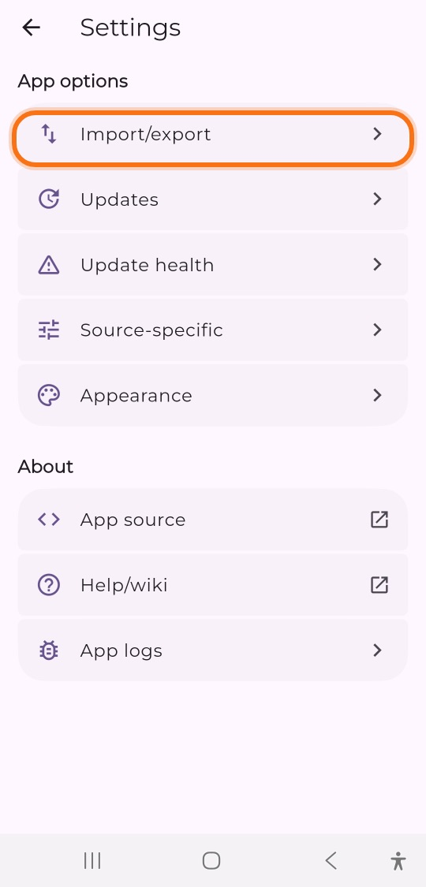
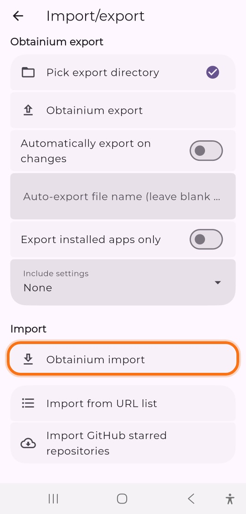
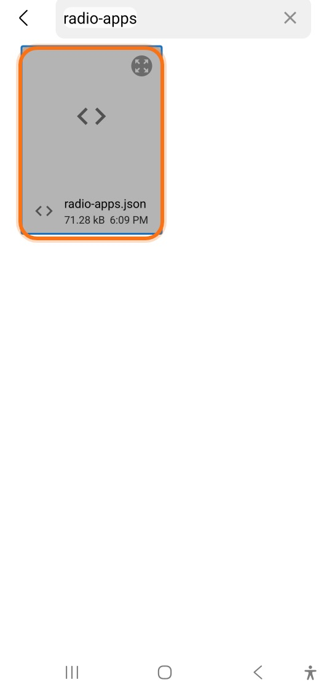
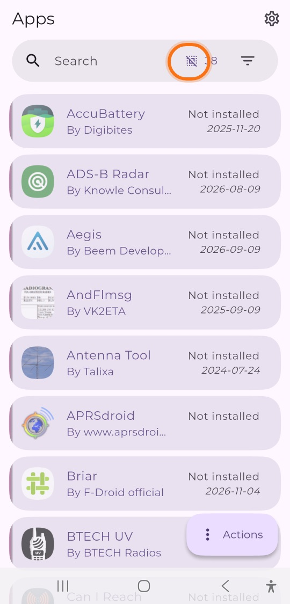
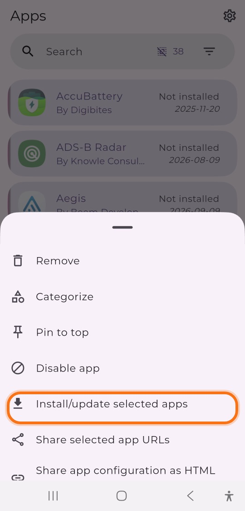
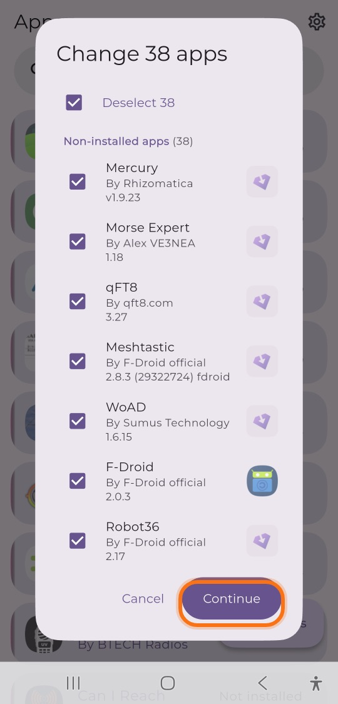
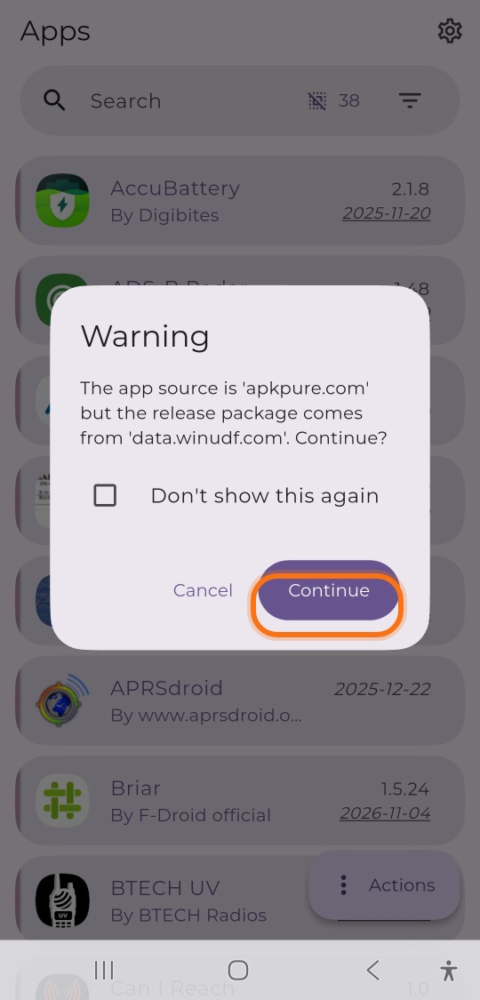
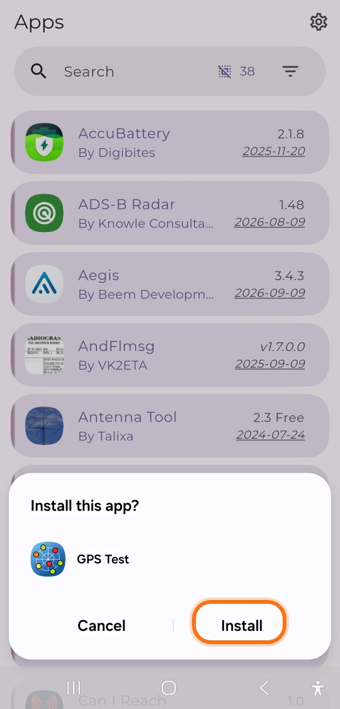

73 Android
A curated set of ham radio, SDR and off-grid apps for Android. Add them all in a few taps, and they keep themselves up to date. How we pick sources →
Set up in three steps
Already have some of these apps? We recommend uninstalling them first, then reinstalling them through Obtainium so they all update the same way. Uninstalling deletes the data inside those apps (settings, logs, saved channels), so back up or write down anything important first.
-
Install Obtainium
Obtainium is a free, open-source app that installs and updates apps directly from their official sources (GitHub, F-Droid, APKPure and so on).
Get ObtainiumDownload the
app-arm64-v8a-release.apkfile (it works on almost every modern phone). Open it and allow "install unknown apps" when Android asks. -
Download the radio app list
A single file with all apps and their source settings.
Download radio-apps.json -
Import it into Obtainium
In Obtainium, open Settings → Import/export → Obtainium import and choose
radio-apps.jsonfrom your Downloads folder.Then go to Apps, tap the Select all icon, then Actions → Install/update selected apps, and tap Continue.
Swipe through the screenshots. The orange outline shows where to tap.

1 Tap ⚙ Settings, then Import/export 
2 Tap Obtainium import 
3 Pick radio-apps.json from Downloads 
4 Back on Apps, tap the Select all icon 
5 Tap Actions → Install/update selected apps 
6 Tap Continue 
7 "Comes from a different site" warning: tap Continue 
8 Tap Install for each app In Obtainium the apps are grouped under a Radio apps category.
Expect a lot of pop-ups. They're normal. Installing 38 apps means Android and Obtainium will ask you to confirm a lot. Here's what you'll see and what to tap:
- "Allow installs from this source?" (first time only)Android asks before Obtainium can install apps. Tap Settings, turn on Allow from this source, then go back.
- "The app source is … but the release package comes from …"The download is served from a different site than the app's page, for example APKPure's download server
data.winudf.com, qFT8's GitHub, or WoAD's Google Drive. Tap Continue. Tick Don't show this again the first time to skip the rest. - "Install this app?" (once for every app)Android confirms each app. Tap Install.
- Play Protect: "Unsafe app blocked" or "built for an older version of Android"Some older ham apps (like AndFlmsg) trigger this. It's about the app's age, not a virus. Tap More details, then Install anyway. Don't tap Got it, which cancels the install.
- Play Protect: "Scan app?" or "Send app for a security check?"Either choice is fine. Tap Scan app, or Install without scanning, or Don't send.
- "Some errors occurred" or "No internet"Usually the Wi-Fi or cell signal dropped during a download. When you're back online, tap Select all → Actions → Install/update selected apps again. Only the missing apps are installed.
Tip: put them in a folder. Obtainium can't create home-screen folders, but you can do it yourself in a minute. Long-press one radio app's icon, drag it onto another to make a folder, name it Radio apps, then drag the rest in.
Install these separately
These apps can't be added through Obtainium. Install them from the store or site below. Your Play Store or the developer handles their updates.
ATAK with radio plugins
ATAK is the free civilian Team Awareness Kit: shared maps, positions and messaging. This setup adds plugins for the BTECH UV-PRO and MeshCore, plus offline maps for your state.
It isn't a normal app download. A program on your computer installs everything onto your phone over a USB cable.

Watch first: "ATAK plugin for MeshCore and UV-PRO is here!" by AmRRON on YouTube.
What you need
- A Windows or Linux computer
- A USB cable for your phone
- USB debugging turned on: Settings → About phone → tap Build number 7 times, then Settings → Developer options → USB debugging
Get the installer
On the releases page, under Assets, download ATAKSetup-…exe for Windows or atak-imagery-…-linux-install.zip for Linux. Don't use the "Source code" zip.
Or add apps one at a time
With Obtainium installed, tap Add on any app below to open it straight in Obtainium.
Loading app list…
Suggest an app or report a problem
Know a radio app that should be on this list, or did something not install right? Send an email to doodlecomms89@gmail.com.
Suggest an app Report a problem